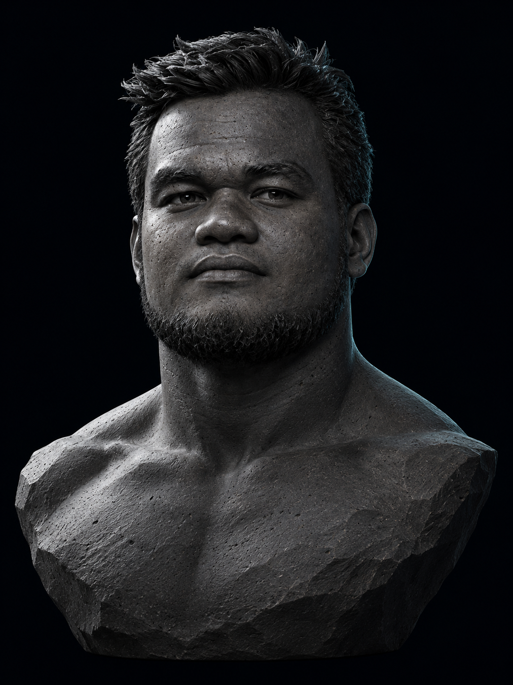
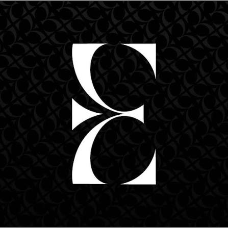
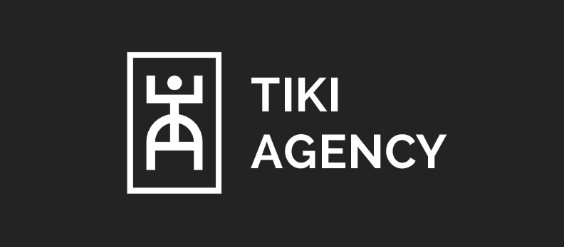
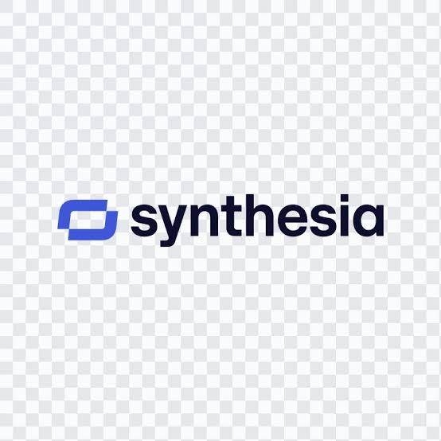
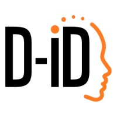

Besoins initiaux recensés
810 500 FÉquipements et frais d’accès prévus

01 / Mon projet
Créer son influenceur virtuel
et ses vidéos publicitaires
avec l’intelligence artificielle.
Promouvoir ses produits
sans avoir à se filmer.
Pour qui ?Les professionnels
de Polynésie française
Comment ?Une future plateforme en ligne
par abonnement
Implantation envisagée :Paea, Tahiti
Communication numérique
05 / Mon étude de marché
30 professionnels interrogés en Polynésie française
Manquent de temps pour créer des vidéos.
15 répondants sur 30.Envisagent un budget allant jusqu’à 10 000 F CFP/mois.
22 répondants sur 30.Citent le manque de compétences techniques comme frein.
8 répondants sur 30.Enquête réalisée avant la fixation des tarifs définitifs des abonnements.
Agences locales


Plateformes internationales


Simplifier la création, soigner le réalisme et proposer plusieurs budgets.
09 / Prévisions financières
Année 1 — Montants prévisionnels en F CFP
Équipements et frais d’accès prévus
214 abonnements-mois prévus
Hors prélèvements personnels
Retraits progressifs sur l’année
Après dépenses et prélèvements
Environ 176 857 F de CA par mois
Financement complémentaire de 120 500 F à constituer par épargne. Aide FA’ATI’A conditionnelle.